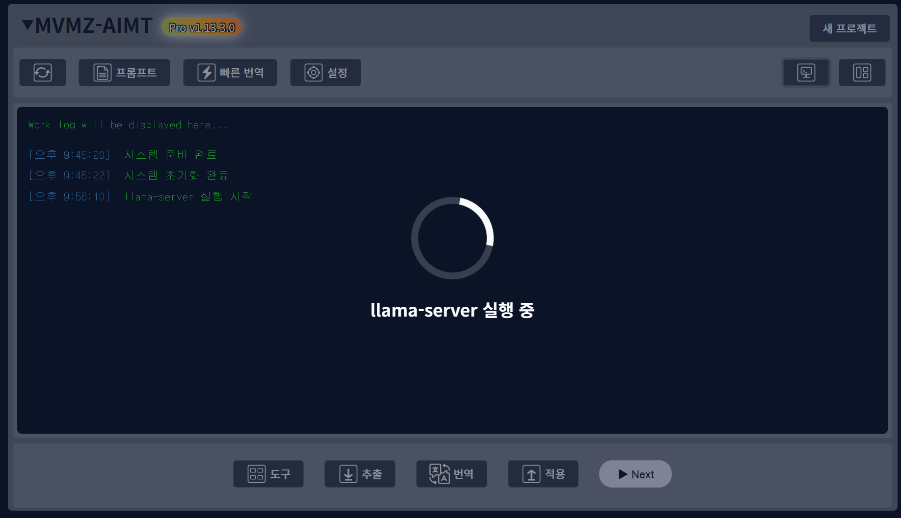

llama-server
문서 기준: AIMT PRO 1.13 계열
최종 편집 일시: 2026-06-18
이 참고 문서의 범위
llama-server은 일반 작업 흐름보다 세밀한 설정이나 파일 내용을 확인할 때 참고하는 문서입니다.
변경 전 확인할 중요 사항
중요: 값을 바꾸기 전에는 기존 설정, 원문 파일, 적용 전 결과를 먼저 확인하세요.
참고 내용
{kind=link}

이 기능은 무엇인가요?
llama-server는 현재 번역 설정에 잡혀 있는 Llama 모델로 로컬 추론 서버를 따로 띄우는 도구입니다.
즉, 번역을 시작하는 버튼이라기보다 지금 설정해 둔 Llama 모델이 실제로 실행 가능한 상태인지 먼저 열어 두는 도구에 가깝습니다.
사실상 프로그램 외부에서 로컬 모델을 쓸 수 있는 상태로 만드는 도구입니다.
적당히 간편하게 써먹기 좋습니다.
현재 버전에서는 도구 모달의 기타 탭에 있고, 실행 중이면 같은 자리 버튼이 llama-server 종료로 바뀝니다.
어떻게 쓰나요?
흐름은 아래처럼 보면 됩니다.
- 도구 모달의
기타탭에서llama-server를 누릅니다.
- 먼저
번역 설정모달이 열립니다.
- 여기서 현재 Provider와 모델 설정을 확인하고 저장합니다.
- 저장이 성공한 뒤에만
llama-server실행이 이어집니다.
즉, 이 버튼은 현재 설정을 무시하고 바로 서버를 띄우는 구조가 아닙니다.
실행되면 무엇이 준비되나요?
현재 버전에서는 서버는 127.0.0.1의 빈 포트를 자동으로 잡아서 열립니다.
즉, 사용자가 포트를 직접 고르는 방식이 아니라 로컬에서 쓸 수 있는 포트를 자동으로 선택하는 구조입니다.
몇번 포트를 쓰는지는 중앙 Console화면에 표시되니 확인해주세요.
이 도구는 현재 세션 안에서 llama-server를 먼저 띄워 두는 용도로 보면 됩니다.
어떤 설정이 필요하나요?
현재 버전에서는 아래 조건이 먼저 맞아야 합니다.
- 번역 설정의
Provider가Llama여야 합니다.
- 번역 설정에 실제 Llama 모델이 지정되어 있어야 합니다.
즉, Provider가 다른 값으로 되어 있거나 Llama 모델이 비어 있으면 실행되지 않습니다.
실행 파일은 어디를 보나요?
현재 버전에서는 3rdparty 또는 _internal/3rdparty 아래의 llama* 디렉터리에서 llama-server.exe와 ggml-*.dll이 있는 패키지를 자동으로 찾습니다.
즉, 로컬 런타임 파일이 빠져 있으면 버튼을 눌러도 정상 실행되지 않습니다.
모델 파일은 어떻게 잡히나요?
현재 버전에서는 현재 번역 설정의 Llama 모델 정보를 먼저 읽습니다.
보통은 이미 지정된 로컬 모델 파일을 쓰는 흐름으로 보면 됩니다.
다만 모델 경로가 없고 다운로드 정보만 있는 설정이면, 프로그램에서는 모델 다운로드를 시도한 뒤 실행으로 이어질 수 있습니다.
그래서 첫 실행은 상황에 따라 바로 켜지지 않고 더 오래 걸릴 수 있습니다.
추가로 현재 버전에서는 이 다운로드 경로는 huggingface_hub가 있어야 이어집니다.
종료는 어떻게 하나요?
현재 버전에서는 이 도구가 현재 세션에서 띄운 서버가 살아 있으면, 도구 모달을 다시 열었을 때 버튼 이름이 llama-server 종료로 바뀝니다.
이 상태에서 버튼을 누르면 현재 도구가 띄운 llama-server 프로세스를 종료합니다.
즉, 실행과 종료가 따로 떨어진 두 버튼이 아니라 상태에 따라 이름이 바뀌는 같은 버튼으로 보면 됩니다.
자주 헷갈리는 점
버튼을 누르면 바로 서버가 켜지나요?
그렇게 보면 다소 다릅니다.
현재 버전에서는 먼저 번역 설정 모달이 열리고, 설정 저장이 성공해야 그 다음에 서버 실행이 이어집니다.
번역 시작 버튼과 같은 기능인가요?
아닙니다.
이 기능은 llama-server만 먼저 띄우는 도구입니다.
즉, 실제 파일 번역이나 빠른 번역은 별도 번역 흐름에서 다시 시작해야 합니다.
실행 중인지 어디서 보나요?
현재 버전에서는 도구 모달을 열 때 상태를 조회해서, 이 도구가 현재 세션에서 띄운 서버가 남아 있으면 버튼 라벨이 llama-server 종료로 바뀝니다.
즉, 외부에서 따로 띄운 서버나 이전 세션에 남은 서버까지 모두 잡아내는 상태 표시로 보면 과장입니다.
눌렀는데 오래 걸릴 수도 있나요?
그럴 수 있습니다.
현재 버전에서는 서버 준비 완료를 기다리는 시간이 길 수 있고, 모델 다운로드가 필요한 상황이면 더 오래 걸릴 수 있습니다.
실행이 안 될 수도 있나요?
그럴 수 있습니다.
- Provider가
Llama가 아닐 때
- Llama 모델이 지정되지 않았을 때
llama-server.exe나ggml-*.dll패키지를 찾지 못할 때
- 모델 파일이 없고 다운로드도 이어지지 않을 때
- 서버가 시작 중 바로 종료되거나 준비 시간이 초과될 때
이런 경우 현재 버전에서는 실행이 중단됩니다.
알아둘 점
llama-server는 현재 Llama 번역 설정을 기준으로 로컬 서버만 먼저 띄우는 도구입니다.
- 버튼을 누르면 먼저
번역 설정모달이 열리고, 저장 성공 뒤에만 실행이 이어집니다.
- 실행 주소는
127.0.0.1의 자동 선택 포트를 사용합니다.
Provider=Llama와 실제 모델 지정이 먼저 되어 있어야 합니다.
- 런타임 패키지는
3rdparty또는_internal/3rdparty아래의llama*디렉터리에서 자동 탐색합니다.
- 실행 중에는 같은 버튼이
llama-server 종료로 바뀌고, 다시 누르면 현재 세션에서 이 도구가 띄운 서버를 종료합니다.
- 이 기능은 번역 자체를 시작하는 버튼이 아닙니다.
갱신이력
- 1.14.0.0 : 기능 추가.